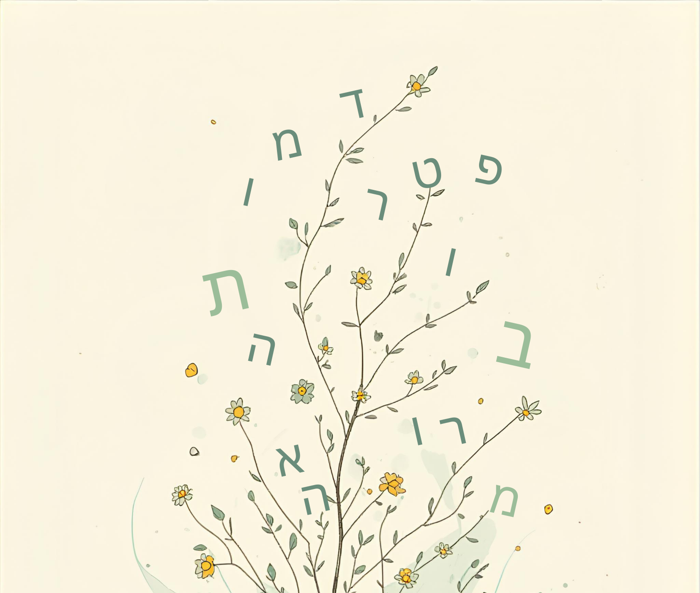

כשמורה אומרת בפגישת צוות "הכיתה שלי היא ג'ונגל" — כולם מיד מבינים. אבל מה בדיוק קורה שם? ג'ונגל הוא מקום שיש בו שפע וצמיחה, אבל גם כאוס, יצרים וחוק הישרדות. ברגע שהמורה בחרה במילה הזאת — היא גם קבעה מה לא נמצא שם: לא סדר, לא מבנה, לא תוצאה מתוכננת. המטפורה לא תיארה את הכיתה — היא פירשה אותה.
מה שנראה כ"דימוי" או "ביטוי ציורי" הוא למעשה מנגנון חשיבה עמוק. הפילוסוף ניל פוסטמן (Postman, 1995) כתב שלכל תחום ידע יש "מטפורות שורש" שדרכן אנחנו חושבים עליו. בחינוך הן עוצמתיות במיוחד — כי הן מכתיבות לא רק איך לתאר את ההוראה, אלא איך לפעול בה.
ב-1980 פרסמו הבלשן ג'ורג' לייקוף והפילוסוף מארק ג'ונסון את ספרם Metaphors We Live By, וביטלו אחת ההנחות הבסיסיות של הפילוסופיה המערבית. הם הראו שמטפורות אינן "קישוט" — הן האופן שבו אנחנו חושבים, ממש. לא רק כשמדברים "יפה", אלא בכל שיחה רגילה: "השקעתי זמן בתלמיד הזה" (זמן = כסף), "הרצאה שבנויה היטב" (שיעור = בניין), "אני נותן לתלמידים ידע" (ידע = חפץ שניתן מיד ליד). אנחנו שוחים בתוך מטפורות מבלי לשים לב.
כשמורה אומרת "אני מזינה את תלמידיי" — היא לא מדברת יפה. היא מתארת תפקיד: היא זו שמחזיקה את המזון, שמחליטה מה לתת ומתי, והתלמידים מקבלים בפסיביות. כשמורה אחרת אומרת "התלמידים שלי בונים את הידע" — זו לא רק מילה שונה. זו תפיסת עולם שונה: הסטודנט הוא הסוכן הפעיל, לא הכלי. ושתי המורות האלה ינהלו את הכיתה שלהן אחרת — לא כי בחרו "שיטה", אלא כי המטפורה שנושאות עמהן מכתיבה להן מה אפשרי ומה לא.
ניקח את המטפורה "הוראה היא גננות" ונפרק אותה לאיטנו — כדי לראות מה הכוח שלה.
לייקוף וג'ונסון הראו שכל מטפורה בנויה משני עולמות. עולם שאנחנו מכירים היטב — הגן, הצמחים, הגנן, ההשקיה, העונות — הם כינו אותו תחום המקור. ועולם שאנחנו רוצים להבין טוב יותר — ההוראה, הכיתה, הלמידה — הם כינו אותו תחום היעד. המטפורה בונה גשר: אנחנו לוקחים את המבנה של עולם הגן ומשליכים אותו על עולם ההוראה.
הגשר הזה עובד דרך מיפויים — התאמות שיטתיות בין שני העולמות: הגנן הופך למורה, הצמח הופך לתלמיד, ההשקיה הופכת להוראה, הפריחה הופכת להצלחה. אבל שימו לב לדבר הבא: הגנן גם מוכר פרחים, גם חופר בוץ, גם נלחם בעשבים שוטים. אלה לא "עוברים" למטפורה. המיפוי הוא תמיד חלקי — לוקחים מהמקור רק את מה שמאיר את היעד בדרך הרצויה.
וכאן הנקודה הגדולה ביותר: כל מה שהמטפורה מאירה — היא בו-זמנית מסתירה. מטפורת הגנן מאירה טיפוח, צמיחה אישית, סבלנות, תנאים נכונים. אבל בכך היא מסתירה מבחנים, ציונים, לוחות זמנים, דרישות מוסד. מורה שתופסת את עצמה כגנן עשויה לא להתעמת, לא להגביל, לחכות בסבלנות — גם כשהמצב דורש התערבות ישירה. לא כי היא "לא יודעת" — אלא כי המטפורה שהיא נושאת לא "מראה" לה את האפשרות הזו.
| מטפורה | מאירה | מסתירה |
|---|---|---|
| מורה כגנן | טיפוח, סבלנות, צמיחה אישית | הערכה, גבולות, לוחות זמנים |
| מורה כמאמן | אתגר, תרגול, שיפור מתמיד | הנאה, קצב אישי, יצירתיות |
| מורה כמנצח תזמורת | תיאום, דיוק, קול משותף | קול ייחודי, ספונטניות, שיחה |
כשחוקרים ביקשו ממורים ברחבי העולם לסיים את המשפט "הוראה היא כמו..." — הם קיבלו מגוון עצום של תשובות. ניתוח של מאות תשובות כאלה גילה שרוב המטפורות נופלות לשש קטגוריות גדולות.
יש מורים שרואים את עצמם קודם כל כספקי ידע — מעיין, ספר פתוח, אנציקלופדיה חיה. בכיתה שלהם, הידע זורם ממורה לתלמידים. מולם עומדים מורים שמדמים את עצמם לבעלי מלאכה — פסלן, אדריכל, אומן — שיוצרים ידע יחד עם התלמידים, לא מעבירים אותו אליהם. יש מנחים ומלווים — פנס, מורה-דרך — שרואים עצמם כמי שמדליקים מנורות, לא ממלאים מיכלים. ויש מטפחים — גנן, הורה — שמדגישים קשר רגשי, מרחב בטוח וגדילה בקצב הטבעי.
כל קטגוריה נושאת עמה הנחות שונות לגמרי: מי אחראי ללמידה? מה תפקיד הכישלון? האם מורה "נותן" ידע או "מאפשר" גילוי? אלה לא הבדלי סגנון — אלה תפיסות עולם שמכתיבות כל החלטה פדגוגית, מרמת הקול ועד לאופן מתן המשוב.
אחת המחקרות החשובות בתחום, אנה ספארד (1998), שאלה שאלה שונה: לא "מה מטפורת המורה?" אלא "מה מטפורת הלמידה עצמה?" ובמאמר שהפך לאחד המצוטטים ביותר בחינוך, היא הציעה שכל שיח חינוכי מבוסס על אחת משתי תפיסות מנוגדות. מטפורת הרכישה רואה בלמידה צבירה — הלומד "רוכש" ידע, "צובר" מיומנויות, "בעל" הבנה. מטפורת ההשתתפות רואה בלמידה השתלבות — הלומד נהיה חלק מקהילה, מאמץ שפה ואורחות חיים, הופך לאדם אחר. ספארד לא אמרה שאחת עדיפה — היא הזהירה שהסכנה היא להיצמד לאחת בלבד, ולשכוח שהלמידה היא גם וגם.
הבנתם מה זו מטפורה ואיך היא עובדת. עכשיו נשאלת השאלה: מה עושים עם זה בפועל?
חוקרים מאוניברסיטת BYU (2020) גילו משהו מעניין: כשסטודנטים התבקשו לא רק לנתח מטפורה אלא לתרגם אותה לתמונה — ההבנה שלהם הלכה לעומק הרבה יותר. הסיבה פשוטה: תרגום מטפורה לתמונה מחייב להחליט. מה בדיוק יהיה גדול בתמונה? מה במרכז? מי נותן ומי מקבל? האם הדמויות עומדות באותו גובה? לא ניתן להתחמק מהשאלות האלה בתמונה — כמו שאפשר להתחמק מהן במילים.
לכן, בתהליך שתעברו כאן, תכתבו הנחיה (פרומפט) לכלי AI ותיצרו ממנה תמונה. תהליך כתיבת הפרומפט עצמו הוא ניתוח: כשתכתבו "מורה כגנן", הכלי לא יודע מה אתם מתכוונים — ותצטרכו להחליט בדיוק אילו מיפויים לייצג ואיך. ולאחר שתראו את התמונה, יחכו לכם שאלות שיעמיקו את ההבנה עוד: האם המיפויים שזיהיתם נמצאים שם? מה ה-AI הכניס מעצמו? מה הוא הסתיר? מה התמונה אומרת על יחסי הכוח בין מורה לתלמיד?
כלי ה-AI לא "יודע" מה נכון — הוא מחקה את הסטריאוטיפים הויזואליים הנפוצים ביותר שאומנו עליו. כשהוא בוחר איך לייצג "מורה", הוא משקף הנחות תרבותיות עמוקות — ולעיתים מיושנות. זה, בפני עצמו, חומר לניתוח.
| גישה | חוקר מרכזי | עיקרון מנחה | יישום בהוראה |
|---|---|---|---|
| מטפורה מושגית (CMT) | Lakoff & Johnson | מטפורות הן מבני חשיבה | זיהוי מטפורות סמויות בשיח חינוכי |
| מטפורה מכוונת | Steen | מטפורות יכולות להיות מודעות ומכוונות | בחירה מודעת של מטפורות בהוראה |
| שתי מטפורות של למידה | Sfard | רכישה מול השתתפות | איזון בין גישות הוראה מגוונות |
| מטפורות ויזואליות | BYU Research | תמונה מחדדת הבנה מושגית | הדמיית מטפורות בכלי AI |
| זהות מקצועית | Bullough, Stokes | מטפורות מעצבות זהות | בחינה רפלקטיבית של מטפורות אישיות |
✅ כן:
❌ לא:
באפליקציה זו תעברו תהליך ניתוח אחדותי בן 7 שלבים. בכל פעם תבחרו מטפורה אחרת מעולם ההוראה — אך מבנה העבודה יישאר זהה. כך תוכלו להעמיק בניתוח מטפורות מגוונות תוך שימוש בשיטה מוכרת ומסודרת.
7 השלבים:
Lakoff, G., & Johnson, M. (1980). Metaphors We Live By. University of Chicago Press.
Sfard, A. (1998). On two metaphors for learning and the dangers of choosing just one. Educational Researcher, 27(2), 4–13.
Thibodeau, P. H., & Boroditsky, L. (2011). Metaphors we think by. PLoS ONE, 6(2), e16782.
The Pedagogical Power of Metaphor. (2020). Locutorium, Brigham Young University.
Teaching Metaphors: Supporting Professional Growth. (2021). ResearchGate.
ענו על 10 שאלות על תיאורית המטפורה המושגית. נדרשים 7/10 להמשך. ניתן לנסות שוב כמה פעמים שרוצים.
בחרו נושא בתפריט למעלה כדי לראות דוגמאות.
| # | מרכיב בתחום המקור | מרכיב בתחום היעד | הסבר קצר | |
|---|---|---|---|---|
| 1 | ||||
| 2 | ||||
| 3 |
פרומפט טוב הוא ספציפי, ויזואלי ומפורט. הנה כמה טיפים:
| נושא | טיפ |
|---|---|
| נושא | תארו את הסצנה המרכזית בבירור — מה קורה בתמונה? |
| צבעים | ציינו פלטת צבעים: warm tones, cool blue, earthy green |
| תאורה | soft lighting, golden hour, dramatic shadows, backlit |
| זווית | bird's eye view, close-up, wide angle, eye level |
| אווירה | peaceful, energetic, mysterious, hopeful, nurturing |
| פרטים | הוסיפו פרטים סמליים שמייצגים את המיפויים שזיהיתם |